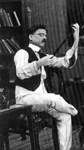

The First Movie of India - RAJA HARISHCHANDRA

This article is about a feature film made by Dadasaheb Phalke in 1913. For a short film made by Phalke in 1917,
see Satyavadi Raja Harishchandra. For the feature film made in Calcutta in 1917, see Satyawadi Raja
Harishchandra.

Raja Harishchandra (transl. King Harishchandra) is a 1913 Indian silent film directed and produced by Dadasaheb
Phalke. It is often considered the first full-length Indian feature film. Raja Harishchandra features Dattatraya
Damodar Dabke, Anna Salunke, Bhalchandra Phalke, and Gajanan Vasudev Sane and is based on the legend of
Harishchandra, with Dabke portraying the title character. The film, being silent, had English, Marathi, and
Hindi-language intertitles.
Phalke decided to make a feature film after watching The Life of Christ (1906) at a theatre in Bombay in April 1911.
In February 1912, he went to London for two weeks to learn filmmaking techniques and upon return founded Phalke
Films Company. He imported the hardware required for filmmaking and exhibition from England, France, Germany, and
the United States. Phalke shot a short film Ankurachi Wadh (Growth of a Pea Plant) to attract investors for his
venture. He published advertisements in various newspapers calling for the cast and crew. As no women were available
to play female roles, male actors performed the female roles. Phalke was in charge of scriptment, direction,
production design, make-up, film editing, along with film processing. Trymbak B. Telang handled the camera. Phalke
completed filming in six months and 27 days producing a film of 3,700 feet (1,100 m), about four reels.
The film premiered at the Olympia Theatre, Bombay, on 21 April 1913, and had its theatrical release on 3 May 1913 at
the Coronation Cinematograph and Variety Hall, Girgaon. It was a commercial success and laid the foundation for the
film industry in the country. The film is partially lost; only the first and last reels of the film are preserved at
the National Film Archive of India. Some film historians believe these belong to a 1917 remake of the film by Phalke
titled Satyavadi Raja Harishchandra.
The status of Raja Harishchandra as the first full-length Indian feature film has been debated. Some film historians
consider Dadasaheb Torne's silent film Shree Pundalik, released on 18 May 1912, the maiden Indian film. The
Government of India, however, recognises Raja Harishchandra as the first Indian feature film.
Plot

King Harishchandra (D. D. Dabke) is shown teaching his son, Rohitashva (Bhalchandra Phalke), how to shoot with a
bow and arrow in the presence of Queen Taramati (Anna Salunke). His citizens ask him to go on a hunting expedition.
While on the hunt, Harishchandra hears the cries of some women. He reaches a place where the sage Vishvamitra
(Gajanan Sane) is performing a yajna to get help from Triguna Shakti (three powers) against their will.[a]
Harishchandra unwittingly interrupts Vishvamitra in the midst of his yajna by releasing the three powers. To appease
Vishvamitra's wrath, Harishchandra offers his kingdom. Returning to the royal palace, he informs Taramati of the
happenings. Vishvamitra sends Harishchandra, Taramati, and Rohitashva in exile and asks them to arrange for
dakshina. While in exile, Rohitashva dies and Harishchandra sends Taramati to ask the Dom king for arranging a free
cremation. While Taramati is on her way to meet the Dom king, Vishvamitra frames her for the murder of the prince of
Kashi. Taramati faces trial, pleads guilty and is ordered to be beheaded by Harishchandra. When he raises his sword
to complete his task, a pleased Lord Shiva appears. Vishvamitra reveals that he was examining Harishchandra's
integrity, returns the crown to him and brings Rohitashva back to life.[3][4]
Cast
- Dattatraya Damodar Dabke as Harishchandra
- Anna Salunke as Taramati, Harishchandra's wife
- Bhalchandra Phalke as Rohitashva, son of Harishchandra and Taramati
- Gajanan Vasudev Sane as Vishvamitra
Other artists in the film were Dattatreya Kshirsagar, Dattatreya Telang, Ganpat G. Shinde, Vishnu Hari
Aundhkar, and Nath T. Telang.[5]
Production
Development
On 14 April 1911, Dadasaheb Phalke with his elder son Bhalchandra went to see a film, Amazing Animals, at
the America India Picture Palace,[7] Girgaon.[8] Surprised at seeing animals on the screen, Bhalchandra informed
his mother, Saraswatibai, about his experience. None of the family members believed them, so Phalke took his
family to see the film the next day. As it was Easter, the theatre screened a film about Jesus, The Life of
Christ (1906) by the French director Alice Guy-Blaché.[6][8][b] While watching Jesus on the screen, Phalke
envisioned Hindu deities Rama and Krishna instead and decided to start in the business of "moving pictures".[8]
After completing his two-week trip to London to learn filmmaking techniques, he founded Phalke Films Company on
1 April 1912.[9][10]
During his London trip, Phalke had placed an order for a Williamson camera and Kodak raw films and a perforator
which reached Bombay (now Mumbai) in May 1912.[11][12] He set up a processing room and taught his family to
perforate and develop the film.[11] Though Phalke was certain of his idea of filmmaking, he could not find any
investors. So, he decided to make a short film to demonstrate the techniques. He planted some peas in a pot,
placed a camera in front of it, and shot one frame a day for over a month. This resulted in a film, lasting just
over a minute, of the seed growing, sprouting, and changing into a climber. Phalke titled this short film
Ankurachi Wadh (Growth of a Pea Plant) and showed it to selected individuals. Some of them, including
Yashwantrao Nadkarni and Narayanrao Devhare, offered Phalke a loan.[12][13]
Story

In his Marathi language magazine Suvarnamala, Phalke had published a story Surabaichi Kahani (A Tale of
Sura). The story, which depicted the ill effects of alcoholism, was the first he considered for filming. After
watching several American films screened in Bombay, he observed that they included mystery and romance, which
the audiences liked. His family members suggested that the storyline should appeal to middle-class people and
women and it should also highlight Indian culture.[14]
After considering various stories depicted in Hindu mythology, Phalke's family shortlisted the legends of
Krishna, Savitri and Satyavan, and Harishchandra.[11] At the time, a play based on the legends of Harishchandra
was popular on Marathi and Urdu stages.[15] Friends and neighbours had often called Phalke "Harishchandra" for
having sold all his belongings, except his wife's mangala sutra, to fulfil his filmmaking dream.[13] Thus,
Phalke decided on the legends of Harishchandra and wrote the script for his feature film.[15]
Casting

Phalke published advertisements in various newspapers like Induprakash calling for the cast and crew
required for the film. It was well-received and huge number of applicants came in for the auditions.[c] Despite
a growing response to the advertisement, he was not satisfied with the performers' skills. He discontinued the
advertisements and decided to scout for the artists through theatre companies.[16]
Padurang Gadhadhar Sane and Gajanan Vasudev Sane were among the first artists to join Phalke Films Company.[17]
The former was playing female roles in the Natyakala theatre company; the latter was performing in Urdu
plays.[16] Both joined for a salary of ₹40 per month. Gajanan Sane introduced his acquaintance Dattatraya
Damodar Dabke. Phalke was impressed with his physique and personality and offered him the lead role of
Harishchandra.[17]
In response to the advertisement, four prostitutes auditioned for the role of Taramati. Phalke rejected them for
not having satisfactory looks and revised the advertisement to read: "Only good-looking women should come for
interview."[17] Two more prostitutes auditioned but left after two days. A young lady, who was a mistress,
auditioned and Phalke selected her for the female lead. She rehearsed for four days. However, on the fifth day,
her master objected to her working in the film and took her away.[17] In despair, Phalke also visited Bombay's
red-light area on Grant Road in Kamathipura. He was asked either to pay a high salary or to marry the woman.[18]
One day, while having tea at a restaurant on Grant Road,[18] Phalke noticed Krishna Hari alias Anna Salunke, an
effeminate young man with slender features and hands.[19] Salunke was working as a cook or waiter at the
restaurant on a monthly salary of ₹10.[19][20] He agreed to work in films when Phalke offered him a raise of
five rupees.[21][d]
Phalke auditioned many boys for the role of Rohitashva, son of Harishchandra and Taramati, but none of the
parents would allow their children to work in the film as the character would have to live in the forests and
was to die. Finally, Phalke's elder son Bhalchandra was assigned the role, becoming the first child actor in
Indian cinema.[17][23]